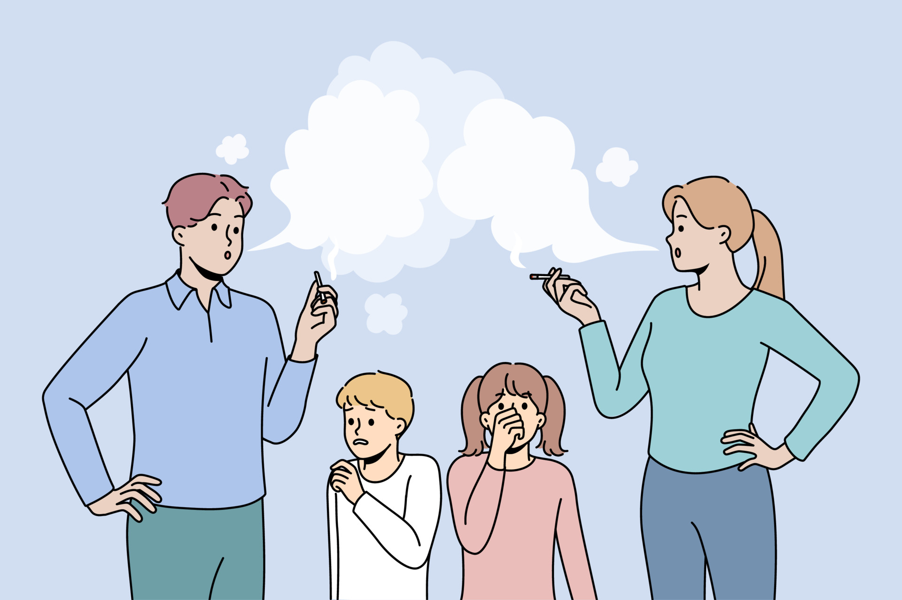

10 Reasons Why Open Conversations About Mental Health Are Important
The BelievePerform team look at how providing spaces for frank and open discussion about mental health helps people in ’10 reasons why open conversations about mental health are important.’
- I. Stigma – The more we talk about mental health the more we create an accepting society where people feel comfortable to open up.
- II. Problem solve – Talking to other people can be a useful strategy to help solve difficult and challenging problems.
- III. Asking for help – Talking to others about mental health could prompt close friends, family or colleagues to offer support.
- IV. Helping others – By talking to people about mental health we are supporting others with the confidence to speak openly.
- V. The more we talk the more we can educate each other about the signs and symptoms of mental health problems.
- VI. Relationships – Talking openly and honestly can help form and strengthen relationships.
- VII. Express emotions – Talking to others can help vent emotions and provide people with an opportunity to express how they are feeling and what they are thinking.
- VIII.Talking to others could encourage and provide someone with the confidence to seek out professional support.
- IX. Talking about mental health can fight against stereotypes.
- X. Talking about feelings and thoughts can help boost confidence, reduce stress and influence health in a positive way.
HOW CAN A PARENTS HELP OF TROUBLED TEENS

The BelievePerform team look at how providing spaces for frank and open discussion about mental health helps people in ’10 reasons why open conversations about mental health are important.’
- Stigma – The more we talk about mental health the more we create an accepting society where people feel comfortable to open up.
- Problem solve – Talking to other people can be a useful strategy to help solve difficult and challenging problems.
- Asking for help –Talking to others about mental health could prompt close friends, family or colleagues to offer support.
- Helping others – By talking to people about mental health we are supporting others with the confidence to speak openly.
- The more we talk the more we can educate each other about the signs and symptoms of mental health problems.
- Relationships – Talking openly and honestly can help form and strengthen relationships.
- Express emotions – Talking to others can help vent emotions and provide people with an opportunity to express how they are feeling and what they are thinking.
- Talking to others could encourage and provide someone with the confidence to seek out professional support.
- Talking about mental health can fight against stereotypes.
- Talking about feelings and thoughts can help boost confidence, reduce stress and influence health in a positive way.